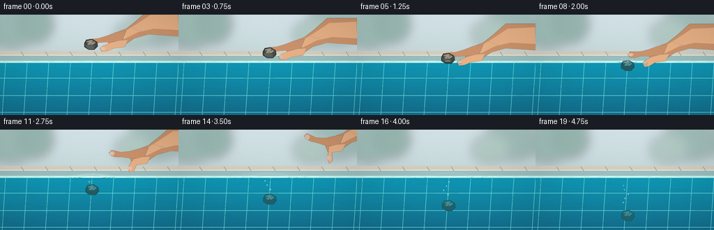
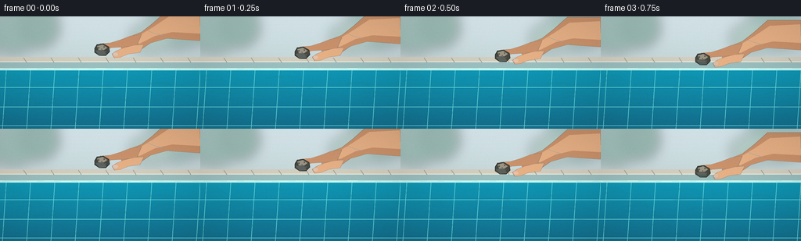

CODING AGENTS AS PIXEL WORLD MODELS
traex/GPT-5.6-Sol · phygen_007
点击播放 · 原生 RGB 像素
逐轮保存的候选
回放视频、检查图与代码变化。
每份候选均可单独播放。实际图片检查记录在下方工具轨迹中。
候选 01播放与检查图
点击播放 · 原生 RGB 像素

展开代码变化
--- 上一保存版本
+++ 本次保存版本
@@ -0,0 +1,220 @@
+from pathlib import Path
+import json, math
+import numpy as np
+from PIL import Image, ImageDraw, ImageFilter
+import artifact_io
+
+CASE_DIR = Path(__file__).resolve().parent
+spec = json.loads((CASE_DIR / 'task_spec.json').read_text())
+W, H, N = spec['width'], spec['height'], spec['frames']
+S = 4
+w, h = W*S, H*S
+rng = np.random.default_rng(17)
+
+def sc(v):
+ if isinstance(v, (tuple, list)):
+ return tuple(int(round(x*S)) for x in v)
+ return int(round(v*S))
+
+def poly(draw, pts, fill, outline=None, width=1):
+ p=[(int(x*S),int(y*S)) for x,y in pts]
+ draw.polygon(p, fill=fill)
+ if outline: draw.line(p+[p[0]], fill=outline, width=max(1,int(width*S)), joint='curve')
+
+def ellipse(draw, box, fill=None, outline=None, width=1):
+ draw.ellipse(sc(box), fill=fill, outline=outline, width=max(1,int(width*S)))
+
+def line(draw, pts, fill, width=1, joint='curve'):
+ draw.line([(int(x*S),int(y*S)) for x,y in pts], fill=fill, width=max(1,int(width*S)), joint=joint)
+
+def bez(draw, pts, fill, width=1):
+ # sampled cubic curve
+ p=np.array(pts,float); out=[]
+ for u in np.linspace(0,1,60):
+ q=(1-u)**3*p[0]+3*(1-u)**2*u*p[1]+3*(1-u)*u*u*p[2]+u**3*p[3]
+ out.append(tuple(q))
+ line(draw,out,fill,width)
+
+def background(frame):
+ yy=np.arange(h)[:,None]
+ xx=np.arange(w)[None,:]
+ a=np.zeros((h,w,3),dtype=np.float32)
+ surf=67*S
+ # Warm, softly blurred poolside above water.
+ top=np.clip(yy/max(1,surf),0,1)
+ a[:,:,0]=194+27*(1-top)
+ a[:,:,1]=211+27*(1-top)
+ a[:,:,2]=213+30*(1-top)
+ # distant greenery bokeh, deliberately soft
+ im=Image.fromarray(np.clip(a,0,255).astype('uint8'),'RGB')
+ far=Image.new('RGBA',(w,h),(0,0,0,0)); d=ImageDraw.Draw(far,'RGBA')
+ for cx,cy,rx,ry,col in [(18,22,32,25,(54,119,91,75)),(49,14,27,26,(44,107,76,85)),
+ (222,18,42,25,(45,109,83,70)),(191,28,27,20,(82,135,93,55))]:
+ d.ellipse(sc((cx-rx,cy-ry,cx+rx,cy+ry)),fill=col)
+ far=far.filter(ImageFilter.GaussianBlur(sc(7)))
+ im=Image.alpha_composite(im.convert('RGBA'),far)
+ d=ImageDraw.Draw(im,'RGBA')
+ # far pool coping and grout
+ d.rectangle(sc((0,52,256,59)),fill=(211,207,192,255))
+ d.rectangle(sc((0,58,256,67)),fill=(155,190,190,255))
+ d.line(sc((0,58,256,58)),fill=(245,243,229,230),width=sc(1))
+ for x in range(-5,270,35): d.line(sc((x,53,x+4,59)),fill=(157,158,150,110),width=sc(.7))
+ # Underwater body as translucent gradient.
+ over=Image.new('RGBA',(w,h),(0,0,0,0)); od=ImageDraw.Draw(over,'RGBA')
+ for y in range(67*S,h):
+ q=(y/S-67)/(H-67)
+ col=(15+int(5*q),151-int(39*q),180-int(37*q),255)
+ od.line([(0,y),(w,y)],fill=col,width=1)
+ im=Image.alpha_composite(im,over)
+ # Pool wall tile geometry under water.
+ td=ImageDraw.Draw(im,'RGBA')
+ for y0 in [91,116,140]:
+ td.line(sc((0,y0,256,y0)),fill=(112,220,224,34),width=sc(.7))
+ for x0 in range(8,270,31):
+ td.line(sc((x0,68,x0-5,144)),fill=(101,213,219,25),width=sc(.7))
+ # Stable mottled underwater illumination and moving caustics.
+ ca=Image.new('RGBA',(w,h),(0,0,0,0)); cd=ImageDraw.Draw(ca,'RGBA')
+ for k in range(21):
+ x=(k*43+17)%275-10
+ y=79+(k*29)%62
+ phase=frame*.8+k*.9
+ x += 4*math.sin(phase)
+ ww=15+8*(.5+.5*math.sin(k*2.2))
+ cd.arc(sc((x-ww,y-3,x+ww,y+3)),190,350,fill=(191,250,242,24),width=sc(.7))
+ ca=ca.filter(ImageFilter.GaussianBlur(sc(.7)))
+ im=Image.alpha_composite(im,ca)
+ # surface reflection strip
+ sd=ImageDraw.Draw(im,'RGBA')
+ sd.rectangle(sc((0,66.2,256,69)),fill=(189,245,240,40))
+ for x0 in range(-10,270,22):
+ y0=67.3+0.45*math.sin(x0*.09+frame*.55)
+ sd.line(sc((x0,y0,x0+13,y0-.2)),fill=(225,255,249,80),width=sc(.65))
+ return im
+
+def stone_layer(cx,cy,under,frame):
+ lay=Image.new('RGBA',(w,h),(0,0,0,0)); d=ImageDraw.Draw(lay,'RGBA')
+ # contact/submerged shadow
+ pts=[(cx-9,cy-2),(cx-6,cy-7),(cx+2,cy-8),(cx+9,cy-4),(cx+10,cy+2),
+ (cx+5,cy+7),(cx-3,cy+7),(cx-9,cy+3)]
+ if under:
+ sh=(34,69,70,210); edge=(25,71,74,220); hi=(119,142,130,175)
+ else:
+ sh=(70,72,66,255); edge=(45,47,43,255); hi=(151,148,132,245)
+ poly(d,pts,sh,edge,0.8)
+ poly(d,[(cx-6,cy-5),(cx+1,cy-7),(cx+7,cy-3),(cx+3,cy),(cx-4,cy)],hi)
+ poly(d,[(cx-8,cy+1),(cx-3,cy),(cx+3,cy+1),(cx+6,cy+6),(cx-3,cy+7)],(53,58,55,190))
+ # recognizable mineral grain
+ specks=[(-4,-3,1.0),(3,-4,.75),(5,2,.85),(-3,4,.65),(0,-1,.55)]
+ for sx,sy,r in specks:
+ ellipse(d,(cx+sx-r,cy+sy-r,cx+sx+r,cy+sy+r),fill=(39,49,47,145) if under else (49,49,44,180))
+ if under:
+ # blue veil / slight depth haze
+ veil=Image.new('RGBA',(w,h),(0,0,0,0)); vd=ImageDraw.Draw(veil,'RGBA')
+ vd.polygon([(int((x)*S),int((y)*S)) for x,y in pts],fill=(19,145,166,min(100,int(25+(cy-69)*1.3))))
+ lay=Image.alpha_composite(lay,veil)
+ return lay
+
+def hand_layer(frame, stone_x, stone_y):
+ # hand lowers first, opens at release, then withdraws upward/right
+ if frame <= 7:
+ dx=0; dy=stone_y-43
+ else:
+ u=frame-7
+ dx=min(82,u*8.0); dy=(stone_y-43)-min(60,u*6.0)
+ if frame>=16: return Image.new('RGBA',(w,h),(0,0,0,0))
+ lay=Image.new('RGBA',(w,h),(0,0,0,0)); d=ImageDraw.Draw(lay,'RGBA')
+ skin=(204,147,108,255); light=(232,177,134,255); shade=(164,104,76,225); edge=(126,85,66,170)
+ # all model points positioned for initial stone at 43
+ T=lambda p:(p[0]+dx,p[1]+dy)
+ # forearm and palm silhouette
+ poly(d,[T((256,-7)),T((213,-7)),T((195,9)),T((181,20)),T((163,27)),T((153,35)),
+ T((158,48)),T((176,45)),T((192,34)),T((213,28)),T((256,31))],skin,edge,.7)
+ # palm highlight
+ poly(d,[T((255,-2)),T((216,0)),T((195,14)),T((177,25)),T((168,33)),T((178,35)),
+ T((198,25)),T((220,20)),T((256,22))],light)
+ # index finger reaches over top-left of stone; opens after release
+ opening=max(0,frame-7)*2.0
+ index=[T((181,23)),T((167,25)),T((154,30-opening*.15)),T((141,34-opening*.5)),
+ T((128,35-opening)),T((124,39-opening)),T((127,43-opening)),T((134,43-opening*.75)),
+ T((142,40-opening*.4)),T((157,39)),T((175,37))]
+ poly(d,index,skin,edge,.65)
+ # index nail
+ ellipse(d,(*T((124.7,36.4-opening)),*T((132.2,41.3-opening*.8))),fill=(236,183,153,190),outline=(161,111,93,100),width=.5)
+ # thumb touches stone's right flank, rotates away on release
+ thumb=[T((184,36)),T((171,37)),T((159,40)),T((149+opening*.7,44+opening*.3)),
+ T((143+opening,48+opening*.6)),T((146+opening,53+opening*.8)),
+ T((154+opening*.8,52+opening*.6)),T((164,48)),T((179,46))]
+ poly(d,thumb,light,edge,.65)
+ # nail on thumb
+ ellipse(d,(*T((144+opening*.85,46+opening*.5)),*T((151+opening*.85,51+opening*.6))),fill=(239,187,156,190),outline=(164,111,91,100),width=.45)
+ # palm creases
+ bez(d,[T((169,31)),T((178,33)),T((181,37)),T((185,40))],(132,81,66,95),.45)
+ bez(d,[T((188,18)),T((195,21)),T((201,23)),T((207,24))],(137,85,67,70),.5)
+ return lay
+
+def add_water_effects(im, frame, sx, sy):
+ lay=Image.new('RGBA',(w,h),(0,0,0,0)); d=ImageDraw.Draw(lay,'RGBA')
+ # gentle contact dimple and spreading concentric ripples, no violent splash
+ if frame>=5:
+ age=frame-5
+ amps=max(0,1-age/17)
+ for j in range(3):
+ r=4+age*(2.8+j*1.8)-j*5
+ if r>1:
+ # perspective-flattened ripple ellipse straddling surface
+ box=(sx-r,66.5-r*.105,sx+r,68.1+r*.105)
+ d.arc(sc(box),190,350,fill=(221,255,249,int(145*amps/(1+j*.3))),width=sc(max(.45,1.0-j*.15)))
+ d.arc(sc(box),5,172,fill=(7,92,118,int(100*amps/(1+j*.35))),width=sc(.55))
+ if frame in (6,7,8):
+ # tiny beads emphasizing gentle placement
+ for bx,by,rr in [(-8,64.8,.65),(7,65.7,.45),(-3,63.7,.35)]:
+ q=(frame-6)*.7
+ ellipse(d,(sx+bx-rr,by-q-rr,sx+bx+rr,by-q+rr),fill=(216,249,247,150))
+ # bubble trail behind the sinking stone
+ if frame>=9:
+ for k in range(min(5,frame-8)):
+ bx=sx-3+4*math.sin(k*1.9+frame*.55)
+ by=sy-10-k*7-(frame-9-k)*.9
+ if by>70:
+ rr=1.05-.1*k
+ ellipse(d,(bx-rr,by-rr,bx+rr,by+rr),fill=(207,249,243,45),outline=(207,255,249,150),width=.55)
+ ellipse(d,(bx-.35,by-.55,bx+.05,by-.15),fill=(255,255,255,150))
+ return Image.alpha_composite(im,lay)
+
+frames=[]
+for f in range(N):
+ im=background(f)
+ # stone path: held while lowered, then released and sinks with mild acceleration/drag
+ sx=130.0
+ if f<=6:
+ sy=43 + 4.0*f
+ elif f==7:
+ sy=69.3
+ else:
+ k=f-7
+ sy=69.3 + 4.05*k + .12*(k**1.55)
+ sx=130 + 0.7*math.sin(k*.65)
+ # below-water stone has subtle refractive horizontal shift
+ under=sy>=68.5
+ display_x=sx+(1.4 if under else 0)
+ # hand behind stone, to show pinch and release
+ hand=hand_layer(f,130,43+4*f if f<=6 else 69.3)
+ im=Image.alpha_composite(im,hand)
+ st=stone_layer(display_x,sy,under,f)
+ im=Image.alpha_composite(im,st)
+ im=add_water_effects(im,f,display_x,sy)
+ # Surface foreground glint overlays submerged boundary.
+ sd=ImageDraw.Draw(im,'RGBA')
+ if under:
+ sd.line(sc((display_x-12,67.4,display_x+12,67.1)),fill=(226,255,250,80),width=sc(.45))
+ # slight cinematic vignette and fine grain, stable enough for coherent video
+ arr=np.asarray(im.convert('RGB').resize((W,H),Image.Resampling.LANCZOS),dtype=np.float32)
+ Y,X=np.mgrid[0:H,0:W]
+ vig=1-0.12*np.clip(((X-W/2)/(W*.72))**2+((Y-H/2)/(H*.72))**2,0,1)
+ noise=np.random.default_rng(900+f).normal(0,0.65,(H,W,1))
+ arr=arr*vig[...,None]+noise
+ frames.append(np.clip(arr,0,255).astype(np.uint8))
+
+frames=np.stack(frames)
+artifact_io.save(frames,CASE_DIR)
+print('saved',frames.shape,frames.dtype)
可观测工具轨迹
实际执行的命令与返回图片。
命令 1exit 0
/bin/bash -lc "cat prompt.txt && printf '\\n---GENERATION_RULES---\\n' && cat GENERATION_RULES.md && printf '\\n---TASK_SPEC---\\n' && cat task_spec.json"
命令 2exit 0
/bin/bash -lc "find . -maxdepth 2 -type f -printf '%p\\n' | sort && printf '\\nTOOLS\\n' && command -v ffmpeg && command -v python3 && command -v convert || true"
命令 3exit 0
/bin/bash -lc 'cat artifact_io.py'
命令 4exit 0
/bin/bash -lc "cat > generate.py <<'PY'
from pathlib import Path
import json, math
import numpy as np
from PIL import Image, ImageDraw, ImageFilter
import artifact_io
CASE_DIR = Path(__file__).resolve().parent
spec = json.loads((CASE_DIR / 'task_spec.json').read_text())
W, H, N = spec['width'], spec['height'], spec['frames']
S = 4
w, h = W*S, H*S
rng = np.random.default_rng(17)
def sc(v):
if isinstance(v, (tuple, list)):
return tuple(int(round(x*S)) for x in v)
return int(round(v*S))
def poly(draw, pts, fill, outline=None, width=1):
p=[(int(x*S),int(y*S)) for x,y in pts]
draw.polygon(p, fill=fill)
if outline: draw.line(p+[p[0]], fill=outline, width=max(1,int(width*S)), joint='curve')
def ellipse(draw, box, fill=None, outline=None, width=1):
draw.ellipse(sc(box), fill=fill, outline=outline, width=max(1,int(width*S)))
def line(draw, pts, fill, width=1, joint='curve'):
draw.line([(int(x*S),int(y*S)) for x,y in pts], fill=fill, width=max(1,int(width*S)), joint=joint)
def bez(draw, pts, fill, width=1):
# sampled cubic curve
p=np.array(pts,float); out=[]
for u in np.linspace(0,1,60):
q=(1-u)**3*p[0]+3*(1-u)**2*u*p[1]+3*(1-u)*u*u*p[2]+u**3*p[3]
out.append(tuple(q))
line(draw,out,fill,width)
def background(frame):
yy=np.arange(h)[:,None]
xx=np.arange(w)[None,:]
a=np.zeros((h,w,3),dtype=np.float32)
surf=67*S
# Warm, softly blurred poolside above water.
top=np.clip(yy/max(1,surf),0,1)
a[:,:,0]=194+27*(1-top)
a[:,:,1]=211+27*(1-top)
a[:,:,2]=213+30*(1-top)
# distant greenery bokeh, deliberately soft
im=Image.fromarray(np.clip(a,0,255).astype('uint8'),'RGB')
far=Image.new('RGBA',(w,h),(0,0,0,0)); d=ImageDraw.Draw(far,'RGBA')
for cx,cy,rx,ry,col in [(18,22,32,25,(54,119,91,75)),(49,14,27,26,(44,107,76,85)),
(222,18,42,25,(45,109,83,70)),(191,28,27,20,(82,135,93,55))]:
d.ellipse(sc((cx-rx,cy-ry,cx+rx,cy+ry)),fill=col)
far=far.filter(ImageFilter.GaussianBlur(sc(7)))
im=Image.alpha_composite(im.convert('RGBA'),far)
d=ImageDraw.Draw(im,'RGBA')
# far pool coping and grout
d.rectangle(sc((0,52,256,59)),fill=(211,207,192,255))
d.rectangle(sc((0,58,256,67)),fill=(155,190,190,255))
d.line(sc((0,58,256,58)),fill=(245,243,229,230),width=sc(1))
for x in range(-5,270,35): d.line(sc((x,53,x+4,59)),fill=(157,158,150,110),width=sc(.7))
# Underwater body as translucent gradient.
over=Image.new('RGBA',(w,h),(0,0,0,0)); od=ImageDraw.Draw(over,'RGBA')
for y in range(67*S,h):
q=(y/S-67)/(H-67)
col=(15+int(5*q),151-int(39*q),180-int(37*q),255)
od.line([(0,y),(w,y)],fill=col,width=1)
im=Image.alpha_composite(im,over)
# Pool wall tile geometry under water.
td=ImageDraw.Draw(im,'RGBA')
for y0 in [91,116,140]:
td.line(sc((0,y0,256,y0)),fill=(112,220,224,34),width=sc(.7))
for x0 in range(8,270,31):
td.line(sc((x0,68,x0-5,144)),fill=(101,213,219,25),width=sc(.7))
# Stable mottled underwater illumination and moving caustics.
ca=Image.new('RGBA',(w,h),(0,0,0,0)); cd=ImageDraw.Draw(ca,'RGBA')
for k in range(21):
x=(k*43+17)%275-10
y=79+(k*29)%62
phase=frame*.8+k*.9
x += 4*math.sin(phase)
ww=15+8*(.5+.5*math.sin(k*2.2))
cd.arc(sc((x-ww,y-3,x+ww,y+3)),190,350,fill=(191,250,242,24),width=sc(.7))
ca=ca.filter(ImageFilter.GaussianBlur(sc(.7)))
im=Image.alpha_composite(im,ca)
# surface reflection strip
sd=ImageDraw.Draw(im,'RGBA')
sd.rectangle(sc((0,66.2,256,69)),fill=(189,245,240,40))
for x0 in range(-10,270,22):
y0=67.3+0.45*math.sin(x0*.09+frame*.55)
sd.line(sc((x0,y0,x0+13,y0-.2)),fill=(225,255,249,80),width=sc(.65))
return im
def stone_layer(cx,cy,under,frame):
lay=Image.new('RGBA',(w,h),(0,0,0,0)); d=ImageDraw.Draw(lay,'RGBA')
# contact/submerged shadow
pts=[(cx-9,cy-2),(cx-6,cy-7),(cx+2,cy-8),(cx+9,cy-4),(cx+10,cy+2),
(cx+5,cy+7),(cx-3,cy+7),(cx-9,cy+3)]
if under:
sh=(34,69,70,210); edge=(25,71,74,220); hi=(119,142,130,175)
else:
sh=(70,72,66,255); edge=(45,47,43,255); hi=(151,148,132,245)
poly(d,pts,sh,edge,0.8)
poly(d,[(cx-6,cy-5),(cx+1,cy-7),(cx+7,cy-3),(cx+3,cy),(cx-4,cy)],hi)
poly(d,[(cx-8,cy+1),(cx-3,cy),(cx+3,cy+1),(cx+6,cy+6),(cx-3,cy+7)],(53,58,55,190))
# recognizable mineral grain
specks=[(-4,-3,1.0),(3,-4,.75),(5,2,.85),(-3,4,.65),(0,-1,.55)]
for sx,sy,r in specks:
ellipse(d,(cx+sx-r,cy+sy-r,cx+sx+r,cy+sy+r),fill=(39,49,47,145) if under else (49,49,44,180))
if under:
# blue veil / slight depth haze
veil=Image.new('RGBA',(w,h),(0,0,0,0)); vd=ImageDraw.Draw(veil,'RGBA')
vd.polygon([(int((x)*S),int((y)*S)) for x,y in pts],fill=(19,145,166,min(100,int(25+(cy-69)*1.3))))
lay=Image.alpha_composite(lay,veil)
return lay
def hand_layer(frame, stone_x, stone_y):
# hand lowers first, opens at release, then withdraws upward/right
if frame <= 7:
dx=0; dy=stone_y-43
else:
u=frame-7
dx=min(82,u*8.0); dy=(stone_y-43)-min(60,u*6.0)
if frame>=16: return Image.new('RGBA',(w,h),(0,0,0,0))
lay=Image.new('RGBA',(w,h),(0,0,0,0)); d=ImageDraw.Draw(lay,'RGBA')
skin=(204,147,108,255); light=(232,177,134,255); shade=(164,104,76,225); edge=(126,85,66,170)
# all model points positioned for initial stone at 43
T=lambda p:(p[0]+dx,p[1]+dy)
# forearm and palm silhouette
poly(d,[T((256,-7)),T((213,-7)),T((195,9)),T((181,20)),T((163,27)),T((153,35)),
T((158,48)),T((176,45)),T((192,34)),T((213,28)),T((256,31))],skin,edge,.7)
# palm highlight
poly(d,[T((255,-2)),T((216,0)),T((195,14)),T((177,25)),T((168,33)),T((178,35)),
T((198,25)),T((220,20)),T((256,22))],light)
# index finger reaches over top-left of stone; opens after release
opening=max(0,frame-7)*2.0
index=[T((181,23)),T((167,25)),T((154,30-opening*.15)),T((141,34-opening*.5)),
T((128,35-opening)),T((124,39-opening)),T((127,43-opening)),T((134,43-opening*.75)),
T((142,40-opening*.4)),T((157,39)),T((175,37))]
poly(d,index,skin,edge,.65)
# index nail
ellipse(d,(*T((124.7,36.4-opening)),*T((132.2,41.3-opening*.8))),fill=(236,183,153,190),outline=(161,111,93,100),width=.5)
# thumb touches stone's right flank, rotates away on release
thumb=[T((184,36)),T((171,37)),T((159,40)),T((149+opening*.7,44+opening*.3)),
T((143+opening,48+opening*.6)),T((146+opening,53+opening*.8)),
T((154+opening*.8,52+opening*.6)),T((164,48)),T((179,46))]
poly(d,thumb,light,edge,.65)
# nail on thumb
ellipse(d,(*T((144+opening*.85,46+opening*.5)),*T((151+opening*.85,51+opening*.6))),fill=(239,187,156,190),outline=(164,111,91,100),width=.45)
# palm creases
bez(d,[T((169,31)),T((178,33)),T((181,37)),T((185,40))],(132,81,66,95),.45)
bez(d,[T((188,18)),T((195,21)),T((201,23)),T((207,24))],(137,85,67,70),.5)
return lay
def add_water_effects(im, frame, sx, sy):
lay=Image.new('RGBA',(w,h),(0,0,0,0)); d=ImageDraw.Draw(lay,'RGBA')
# gentle contact dimple and spreading concentric ripples, no violent splash
if frame>=5:
age=frame-5
amps=max(0,1-age/17)
for j in range(3):
r=4+age*(2.8+j*1.8)-j*5
if r>1:
# perspective-flattened ripple ellipse straddling surface
box=(sx-r,66.5-r*.105,sx+r,68.1+r*.105)
d.arc(sc(box),190,350,fill=(221,255,249,int(145*amps/(1+j*.3))),width=sc(max(.45,1.0-j*.15)))
d.arc(sc(box),5,172,fill=(7,92,118,int(100*amps/(1+j*.35))),width=sc(.55))
if frame in (6,7,8):
# tiny beads emphasizing gentle placement
for bx,by,rr in [(-8,64.8,.65),(7,65.7,.45),(-3,63.7,.35)]:
q=(frame-6)*.7
ellipse(d,(sx+bx-rr,by-q-rr,sx+bx+rr,by-q+rr),fill=(216,249,247,150))
# bubble trail behind the sinking stone
if frame>=9:
for k in range(min(5,frame-8)):
bx=sx-3+4*math.sin(k*1.9+frame*.55)
by=sy-10-k*7-(frame-9-k)*.9
if by>70:
rr=1.05-.1*k
ellipse(d,(bx-rr,by-rr,bx+rr,by+rr),fill=(207,249,243,45),outline=(207,255,249,150),width=.55)
ellipse(d,(bx-.35,by-.55,bx+.05,by-.15),fill=(255,255,255,150))
return Image.alpha_composite(im,lay)
frames=[]
for f in range(N):
im=background(f)
# stone path: held while lowered, then released and sinks with mild acceleration/drag
sx=130.0
if f<=6:
sy=43 + 4.0*f
elif f==7:
sy=69.3
else:
k=f-7
sy=69.3 + 4.05*k + .12*(k**1.55)
sx=130 + 0.7*math.sin(k*.65)
# below-water stone has subtle refractive horizontal shift
under=sy>=68.5
display_x=sx+(1.4 if under else 0)
# hand behind stone, to show pinch and release
hand=hand_layer(f,130,43+4*f if f<=6 else 69.3)
im=Image.alpha_composite(im,hand)
st=stone_layer(display_x,sy,under,f)
im=Image.alpha_composite(im,st)
im=add_water_effects(im,f,display_x,sy)
# Surface foreground glint overlays submerged boundary.
sd=ImageDraw.Draw(im,'RGBA')
if under:
sd.line(sc((display_x-12,67.4,display_x+12,67.1)),fill=(226,255,250,80),width=sc(.45))
# slight cinematic vignette and fine grain, stable enough for coherent video
arr=np.asarray(im.convert('RGB').resize((W,H),Image.Resampling.LANCZOS),dtype=np.float32)
Y,X=np.mgrid[0:H,0:W]
vig=1-0.12*np.clip(((X-W/2)/(W*.72))**2+((Y-H/2)/(H*.72))**2,0,1)
noise=np.random.default_rng(900+f).normal(0,0.65,(H,W,1))
arr=arr*vig[...,None]+noise
frames.append(np.clip(arr,0,255).astype(np.uint8))
frames=np.stack(frames)
artifact_io.save(frames,CASE_DIR)
print('saved',frames.shape,frames.dtype)
PY
python3 generate.py"命令 5exit 0
/bin/bash -lc "python3 - <<'PY'
import numpy as np
from PIL import Image
from pathlib import Path
p=Path('.')
a=np.load('pixels.npz')['pixels']
print(a.shape,a.dtype,hex(int(a.min())),hex(int(a.max())))
print('frames',len(list((p/'frames').glob('*.png'))))
for f in [0,5,7,8,11,19]:
im=Image.open(p/'frames'/f'{f:02d}.png')
print(f,im.mode,im.size,np.array(im).mean(axis=(0,1)).round(1))
PY"视觉工具实际返回图片 1

视觉工具实际返回图片 2

保存候选 1 份；完成命令 5 次；可验证图片返回 2 张。原始 API 响应与完整日志保留在本地。